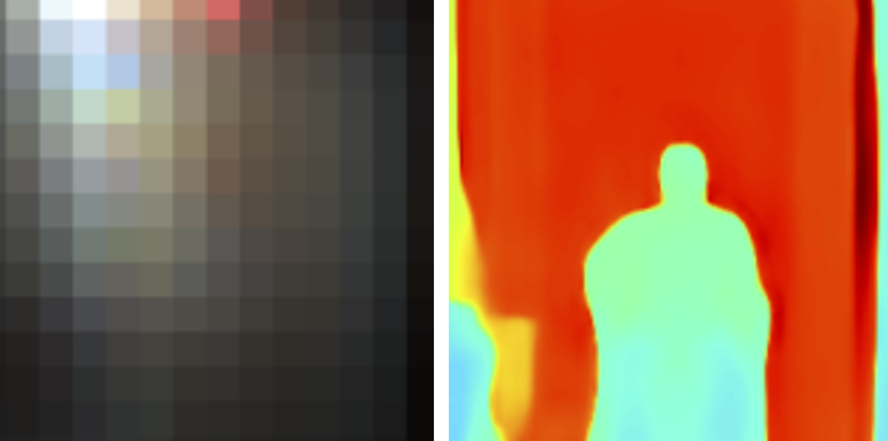

|
Zaid Tasneem
I'm a Ph.D. student at Rice University working under Prof. Ashok Veeraraghavan. My dissertation is on "Privacy-Aware Computational Cameras and Algorithms". Before this I wrote my master's thesis on Adaptive Depth Sensing at University of Florida under Prof. Sanjeev Koppal.
I've also been a visiting researcher at MIT under Prof. Ramesh Raskar and research intern at NEC Labs America in Prof. Manmohan Chandraker's group. I started my academic journey as an undergrad at IIT Kanpur.
Research Interests: Computational Imaging/Photography, Privacy, Federated Learning, Robotics, 3D sensing.
I'm actively looking for full-time R&D positions in industry or startups! Please get it in touch with potential opportunities.
Email /
CV /
Scholar /
LinkedIn /
Github
|

|
Selected Publications
|
|
|
DecentNeRFs: Decentralized Neural Radiance Fields
Zaid Tasneem,
Akshat Dave,
Abhishek Singh,
Kushagra Tiwary,
Praneeth Vepakomma,
Ashok Veeraraghavan,
Ramesh Raskar
arxiv, 2024
project page /
video (needs replacing)
Crowdsourced NeRFs at a global scale that prevents leakage of users' personal content
|
|

|
Learning Phase Mask for Privacy-Preserving Passive Depth Estimation
Zaid Tasneem,
Giovanni Milione,
Yi-Hsuan Tsai,
Xiang Yu,
Ashok Veeraraghavan,
Manmohan Chandraker,
Francesco Pittaluga
ECCV, 2022
project page /
video /
demo
World's first privacy-preserving depth camera.
|
|
|
Towards a MEMS-based Adaptive LIDAR
Francesco Pittaluga*
Zaid Tasneem*,
Justin Folden,
Brevin Tilmon,
Ayan Chakarabarti,
Sanjeev Koppal
3DV, 2020
project page /
video
RGB guided adaptive depth sensing for MEMS LiDAR.
|
|
|
Adaptive fovea for scanning depth sensors
Zaid Tasneem,
Charuvahan Adhivarahan,
Dingkang Wang,
Huikai Xie,
Karthik Dantu,
Sanjeev Koppal
IJRR, 2020
paper
Foveating Depth Sensor on Mobile Robot
|
|
|
Directionally Controlled TOF Ranging for Mobile Sensing Platforms
Zaid Tasneem,
Dingkang Wang,
Huikai Xie,
Sanjeev Koppal
RSS, 2018
project page /
video
World's first adaptive depth sensor.
|
|
|
An integrated forward-view 2-axis mems scanner for compact 3D LiDAR
Dingkang Wang,
Stephan Rojas, Alexander Shuping,Zaid Tasneem,
Sanjeev Koppal,
Huikai Xie
IEEE NEMS, 2018 (Best Student Paper)
paper
Compact MEMS based LiDAR.
|
|